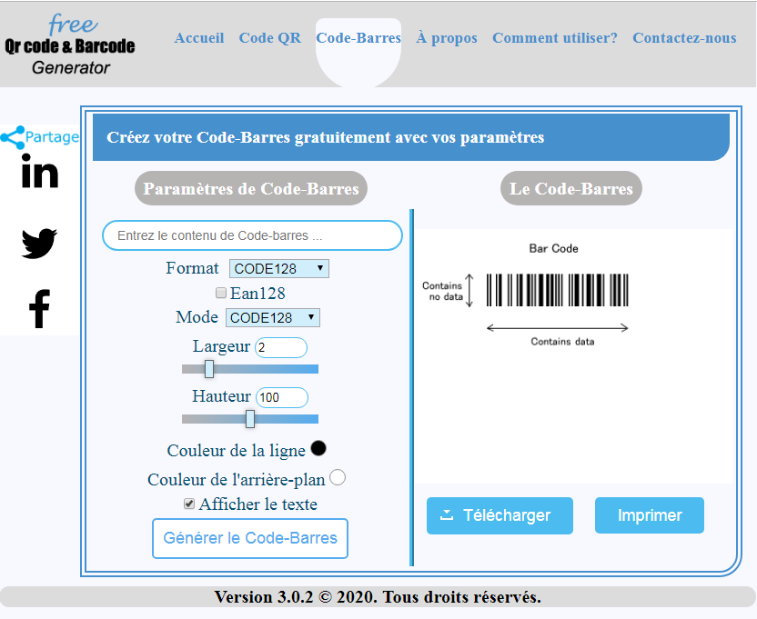
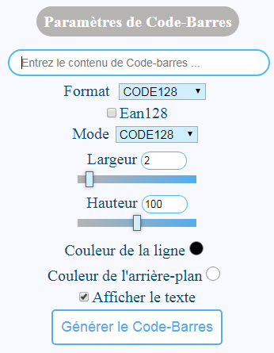
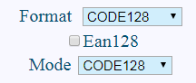
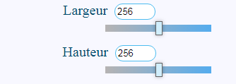
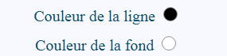
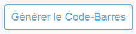
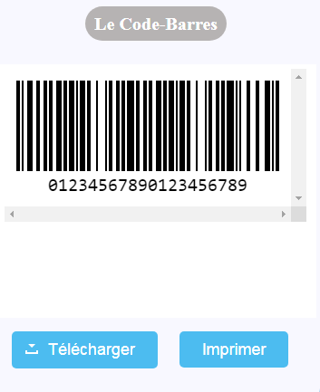

Vous pouvez modifier les paramètres à gauche pour générer un Code-Barres personnalisé.

Entrez le contenu à Générer en Code Qr dans la zone de texte suivant.

Entrez Largeur et Hauteur dans le zone de texte ou sélectionner au Barre bleu.

Cliquez sur le point noir pour sélectionner le Couleur de la ligne d'un Code QR à Générer ou cliquez sur le point blanc pour sélectionner le Couleur de l'arrière-plan à Générer.

Cliquez sur le bouton "Générer le Code QR" pour générer le Code QR.

